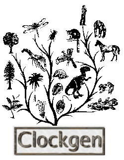

|  |
| Molecular Clock Simulator |
home · download · quickstart · references · index
As simple as unpack, make, make install. The usual commands for that are as follows:
This simple command makes a first simulation:
With this simulation we obtain a phylogeny with 6 sequences originated from a random 20 nucleotides ancestral, written to the standard output. By looking at the parameters we get that:
We can simply redirect this output to a file "output.fasta" by using the following command:
The default model of evolution is the JC model, which makes all mutations have the same probability. We can change that by providing Clockgen another model. The software comes with the most commonly used models of DNA substitution (K2P for example). If you want to use the K2P, for example, with different transition and transversion rates, just type the following command:
The first parameter is the transition rate, the second is the transversion rate. Remember that these values must satisfy the following formula : transsition_rate + 2*transversion_rate = 1.0.
Sometimes it's good to keep track of what has been done when you generate lots of datasets in order not to get lost. For that Clockgen provides two cosmetic contributions. First you can name the sequences being generated, by using -s name. The naming patterns are described in the references. The other is forcing the program to write the description file, which is a little log of what parameters were used to generate the respective phylogeny. For example :
Outputs the sequences the same way as our first example to the pork.fasta file, but it will name each sequence "pork", and will generate the file "pork.desc" with all the parameters you used to generate the pork phylogeny.
home · download · quickstart · references · index